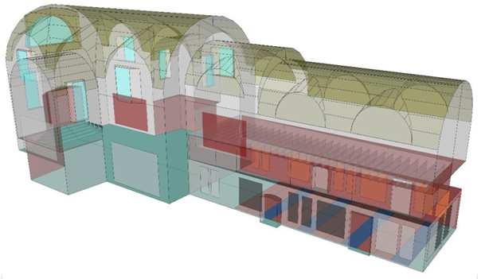
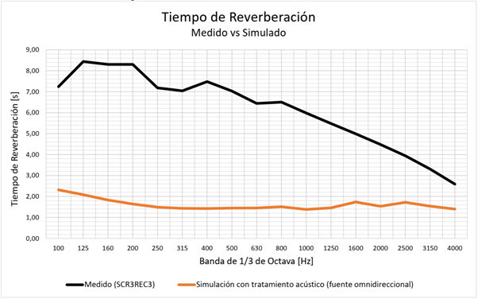
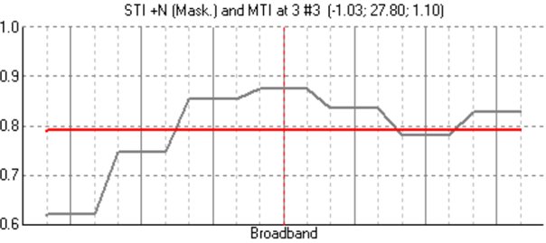
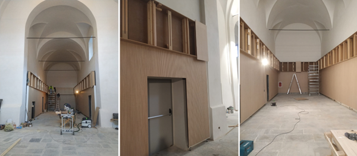
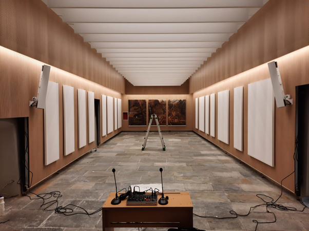

El proyecto
El estudio de arquitectos ARQTROPIA nos encomendó la tarea del adecuamiento acústico de la ex Iglesia Dei Cappuccini, ubicada en la comuna de Chiavenna, al norte de Italia.
El objetivo del proyecto es la adaptación del viejo edificio para ser utilizado como museo, sala de exposiciones y auditorio, involucrando una reforma arquitectónica total.
En cuanto a la acústica, nuestro objetivo fue alcanzar un diseño que permita lograr una correcta adecuación del campo sonoro en función del uso que se dará al recinto.
Diseño arquitectónico
La iglesia tiene forma en planta de cruz latina y se compone de una nave central y una zona de transepto, crucero y coro. Nuestro trabajo se centró en el acondicionamiento acústico de la nave, espacio que es utilizado para conferencias y presentaciones, aunque también hemos realizado algunas observaciones y recomendaciones para los otros espacios.
Evaluación acústica y electroacústica
Todo el análisis acústico partió de una premisa: el uso que se le dará al espacio como auditorio. Este concepto es fundamental para ajustar las variables de relevancia de acuerdo a los criterios establecidos. A partir de esto, se han contemplado aquellos parámetros acústicos fuertemente ligados a la correcta comprensión de la palabra: Tiempo de reverberación, claridad e inteligibilidad de la palabra (C50 y STI), definidos en las normas ISO 3382 “Acústica: Medición de parámetros acústicos en recintos”, partes 1 y 2, y la IEC 60268-16 en referencia al STI. Por otra parte, se evaluaron diversos sistemas de amplificación, procurando utilizar altavoces específicamente diseñados para este tipo de espacios, que permitan minimizar los efectos de la reverberación de la sala.
Estado previo de la Iglesia

Antes de comenzar el proyecto se evaluó el estado actual del recinto mediante un relevamiento acústico, del cual se destacan los valores del tiempo de reverberación obtenido a través de una serie de mediciones en diversos puntos.
Como se puede observar, los valores a frecuencias medias se encuentran en torno a los 6,0 y 7,5 segundos, siendo estos totalmente desaconsejables para cualquier tipo de presentación en donde deba primar el mensaje hablado. A partir de este punto y considerando diversos aspectos funcionales y estéticos, se comenzó a desarrollar un modelo acústico para evaluar alternativas con el fin de proponer un acondicionamiento acústico.
Modelo de simulación
Las simulaciones se efectuaron mediante un modelo acústico del recinto utilizando el programa EASE y el módulo de cálculo AURA. Aquellos materiales absorbentes propuestos fueron elegidos en función de sus coeficientes de absorción. Las simulaciones se efectuaron mediante la emisión de rayos sonoros (técnica de raytracing), utilizando fuentes y receptores.
Propuesta acústica
Para las paredes, se han calculado y diseñado paneles resonadores perforados cubiertos por listones de madera. Estos funcionan absorbiendo en el rango de frecuencias medias, donde predomina la voz humana, principal fuente sonora a considerar.

Por delante de estos paneles se ubican paneles absorbentes PET (Tereftalato de polietileno) impresos que podrán sacarse en caso de requerir.
En la parte superior de estos revestimientos, se instalaron resonadores de madera perforada sintonizados a frecuencias por debajo de 300 Hz, materializado en cajones con cámara de aire variable.
Con el fin de minimizar el impacto de las reflexiones provenientes del techo, se instalaron paneles absorbentes PET suspendidos en forma de rectángulos. Los paneles se encuentran separados de forma equidistante.
En cuanto a la separación entre la nave principal y el resto de la iglesia, se instaló una barrera de vidrio laminado. El objetivo de su implementación es reducir la energía sonora de todas aquellas reflexiones laterales que recorren el transepto y coro y vuelven a la nave principal, reduciendo o eliminando posibles ecos no deseados.
Finalmente, para la zona del coro y crucero se propuso instalar paneles perforados sobre las paredes laterales, mientras que en el transepto se proponen paneles perforados con cámara de aire.
Sistema de refuerzo sonoro
Hemos recomendado los altavoces RCF modelo L 2406T, los cuales tienen una cobertura vertical estrecha y una cobertura horizontal amplia, con el objetivo de enfocar la energía acústica exclusivamente sobre el área de audiencia.
Resultados de las simulaciones acústicas
La evaluación de los parámetros necesarios para caracterizar el campo acústico alcanzado, una vez implementado el tratamiento descrito anteriormente, se realizó con dos configuraciones de fuente:
- Fuente omnidireccional: estimación de parámetros acústicos contrastables con mediciones en el estado original de la sala.
- 2 altavoces RCF modelo L 2406T y un orador humano: estimación de parámetros acústicos similar al uso que se le va a dar.
Los cálculos se efectuaron sobre tres posiciones de oyente, cubriendo las filas delanteras, centrales y traseras.
Las simulaciones se basaron en la técnica de raytracing (acústica geométrica). Para cada rayo que se emite desde la fuente, el software calcula el nivel de presión sonora y el tiempo en que llegará este rayo a la posición de escucha, tras haberse reflejado en las diversas superficies de la sala una cierta cantidad de veces. El resultado de estas simulaciones es un ecograma para cada punto receptor (asientos) que es una representación del nivel de presión sonora por cada rayo que encuentra en su camino al oyente, en función del tiempo.
En primera instancia, se realizó una simulación para el tiempo de reverberación con la fuente omnidireccional para comparar con los resultados de las mediciones en el estado original de la Iglesia.
La reducción alcanzada del tiempo de reverberación es considerable. Partiendo de la situación original, en donde se registraron valores superiores a los 6 segundos en frecuencias medias, se ha alcanzado reducirlos a los 1,5 segundos aproximadamente. Si bien este valor promedio se encuentra aún por encima de lo requerido, representa una reducción de aproximadamente un 75% del tiempo de reverberación. Además, se observa una curva uniforme, indicativo que la cantidad de absorción agregada se encuentra equilibrada en el rango de frecuencias de interés.
A continuación, se realizaron simulaciones con el sistema electroacústico propuesto diseñado para minimizar aún más la energía reverberante.

Tiempo de reverberación

Claridad de la palabra C50
Inteligibilidad de la palabra STI

Echo Speech
El tiempo de reverberación se ha reducido hasta los 1,10 - 1,20 segundos aproximadamente a frecuencias medias, ubicándose ya en valores aceptables para el uso que se le dará al recinto. El C50 se ubica claramente por encima de los 8 dB en ese mismo rango, ponderando con mayor peso la energía sonora temprana que llega a los oyentes. El STI, por su parte, se encuentra por encima del 0,77, calificando la inteligibilidad de la palabra como “Excelente”.
Finalmente, se efectuó un estudio adicional a fin de evaluar potenciales reflexiones tardías que afecten el mensaje hablado. Esto se hizo mediante la inspección de los gráficos de “Echo Speech”. Debido a que no existen reflexiones (áreas negras) que superen la línea demarcada en 1, se verifica que no existirán problemas de ecos.
Ejecución de obras





Conclusiones
Considerando el estado original de la iglesia, caracterizado por las mediciones del relevamiento acústico, así como también las limitaciones de intervención y el volumen total del recinto (≈ 2.338 m3), el valor promedio obtenido para el tiempo de reverberación de 1,20 segundos utilizando una fuente que emula a un orador humano y dos altavoces tipo columna, a frecuencias medias, está dentro de un rango aceptable para un espacio ahora utilizado como sala de conferencias. En este punto, cabe recalcar que los valores en las condiciones originales (es decir, sin tratamiento) se encontraban entre los 6 y 8 segundos, ampliamente superiores a los estimados en las simulaciones. En los resultados se observa también que los valores de este parámetro comienzan a disminuir a partir de los 4 kHz, lo cual contribuye a la baja del “siseo” de la sala, el cual es un problema típico en las iglesias. La uniformidad en frecuencia de las curvas obtenidas asegura que la cantidad de absorción propuesta está debidamente equilibrada.
Los valores de Claridad C50 son todos superiores a 0 dB, siendo este un buen resultado para una correcta inteligibilidad de la palabra. En las frecuencias medias (las cuales resultan de interés ya que en estas se caracteriza la voz humana) los valores del C50 son superiores a los 8 dB. Estos resultados energéticos fueron confirmados mediante el cálculo del STI, obteniendo valores por encima de 0,77 calificando la inteligibilidad de la palabra como “excelente”, lo cual confirma la adecuación de las soluciones de absorción elegidas para el uso de la sala.
Los arquitectos han quedado fascinados con los resultados alcanzados después de la ejecución de las obras y la instalación del sistema electroacústico. Debemos destacar su compromiso al seguir a rajatabla nuestras indicaciones, quedando muy conformes con los resultados acústicos alcanzados!